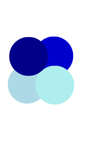
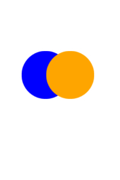
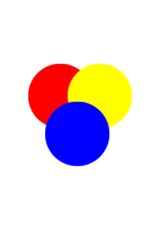

| Color Theme Name | Colors | Hexcode |
|---|---|---|
| Monochromatic | Dark Blue, Medium Blue, Light Blue, Pale Blue | #00008b, #0000cd, #add8e6, #afeeee |
| Analogous | Orange, Red-Orange | #ffa500, #ff4500 |
| Complementary | Blue, Orange | #0000ff, #ffa500 |
| Triadic | Red, Yellow, Blue | #ff0000, #ffff00, #0000ff |
| Split-Complementary | Purple, Yellow-Orange, Yellow-Green | #800080, #ffae42, #9acd32 |

Monochromatic: Uses different shades and tints of a single color.
Analogous: Uses colors that are directly next to each other on the color wheel.

Complementary: Uses colors that are directly opposite of each other on the color wheel.

Triadic: Uses three colors that are evenly spaced out from each other on the color wheel.
Split-Complementary Uses one base color and the two colors that are adjacent to its complement on the color wheel.